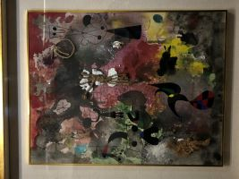
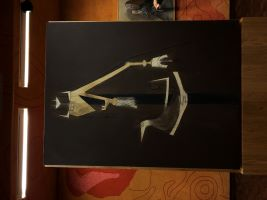
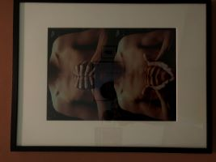
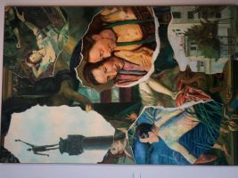
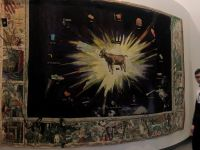
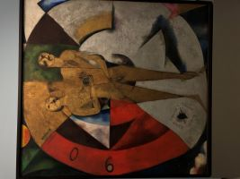
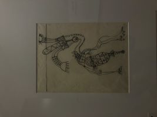
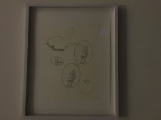

|  |  |  |  |  | |
| my favorite, I love how the artist used differend materials | my second fav, I saw it and loved it but the other takes the cake | I found this one also really pretty and I liked the title 'my hands are my heart' | the tears of the paper are actually painted! | I don't know why but I really loved this | I was impressed that everything was made of fabric |
|  |  |  | I loved the style and it was really big and impressive | I thought it kind of looked like an anteater | I just found this one funny and cool |